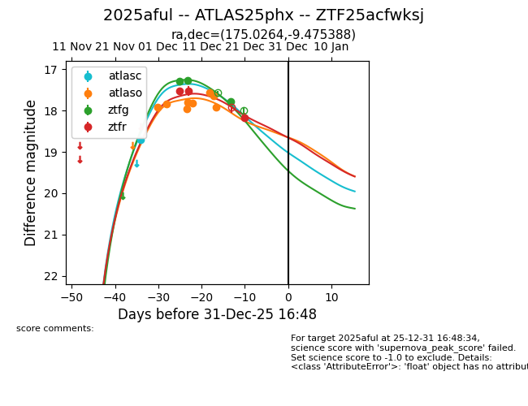
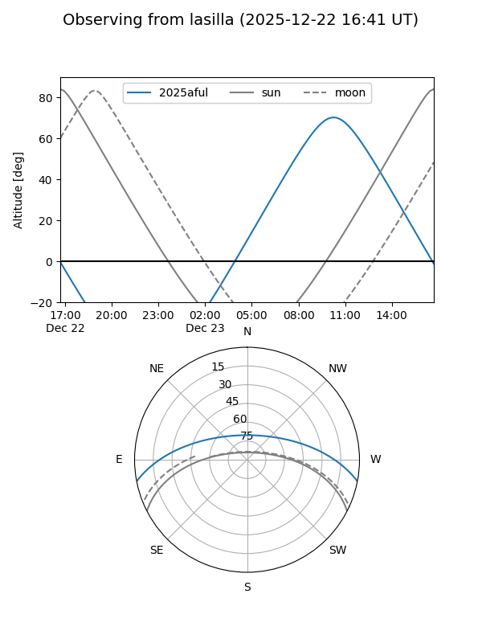
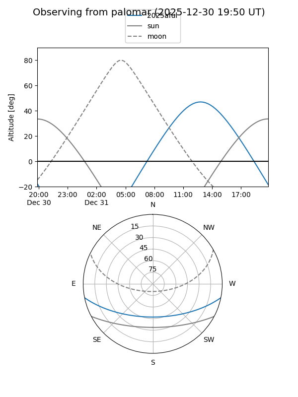
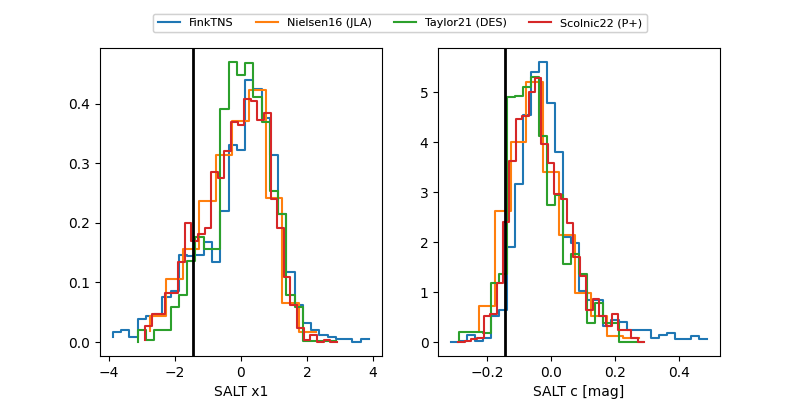

2025aful
Target 2025aful at 2025-12-18 14:27
Aliases and brokers:
FINK: fink-portal.org/ZTF25acfwksj
Lasair: lasair-ztf.lsst.ac.uk/objects/ZTF25acfwksj
ALeRCE: alerce.online/object/ZTF25acfwksj
TNS: wis-tns.org/object/2025aful
YSE: ziggy.ucolick.org/yse/transient_detail/2025aful
alt names
ZTF25acfwksj (ztf,fink_ztf)
2025aful (tns,yse)
ATLAS25phx (atlas)
Coordinates:
equatorial (ra, dec) = 175.0264,-9.47539
equatorial (HMS+DMS) = 11:40:06.35,-09:28:31.40
galactic (l, b) = (275.2038,+49.51727)
Photometry
last atlasc=18.70, atlaso=17.92, ztfg=17.78, ztfr=17.53
1 atlasc, 8 atlaso, 3 ztfg, 2 ztfr detections
Lightcurve

Visibility


Additional plots
